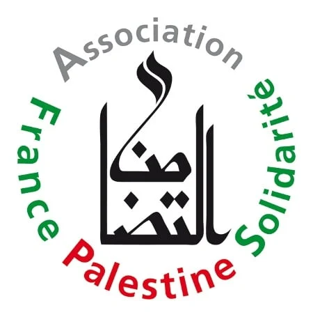
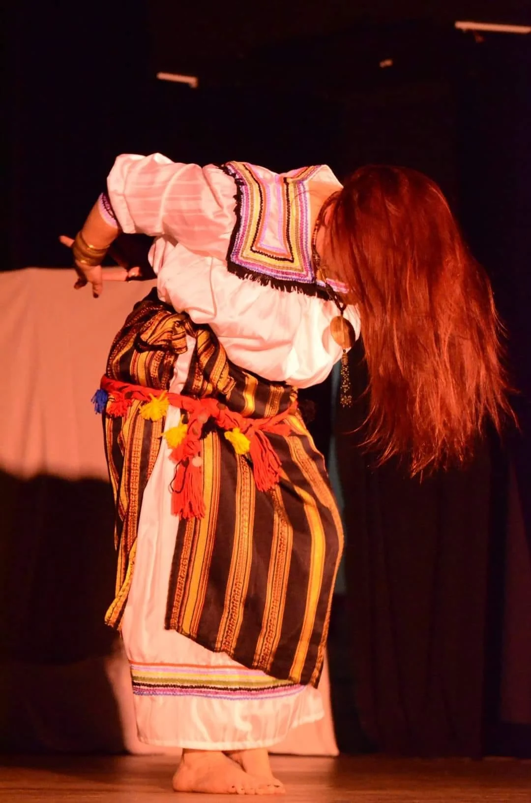

Publication d’archives
REPAS PALESTINIEN le samedi 13 novembre 2021 à Niort, organisé par l'Association France-Palestine Solidarité.
Date indiquée par Facebook · 29 octobre 2021
Texte conservé avec la publication
Contexte du dossier
La solidarité s’organise aussi dans la durée. Le repas palestinien de l’AFPS est annoncé pour le 13 novembre 2021 à Goise, avec les plats d’Au Bled al Cham et Tanoura Danse. La projection de Fédayin, le combat de Georges Abdallah, suivie d’un débat avec Matthieu Jeuland, est annoncée pour le 11 décembre au Patronage laïque. En octobre 2022, un rassemblement niortais du 22 soutient la demande de libération de Georges Ibrahim Abdallah, parallèlement à l’initiative nationale de Lannemezan. Enfin, les vingt ans de l’AFPS sont annoncés pour le 5 novembre, avec exposition, spectacle et repas. Ces invitations ouvrent des lieux d’échange ; elles ne constituent pas leurs comptes rendus.


Sources
Archive rouge · export Facebook · AR-0002-FB-02008
À lire aussi · Protéger les Kurdes de France